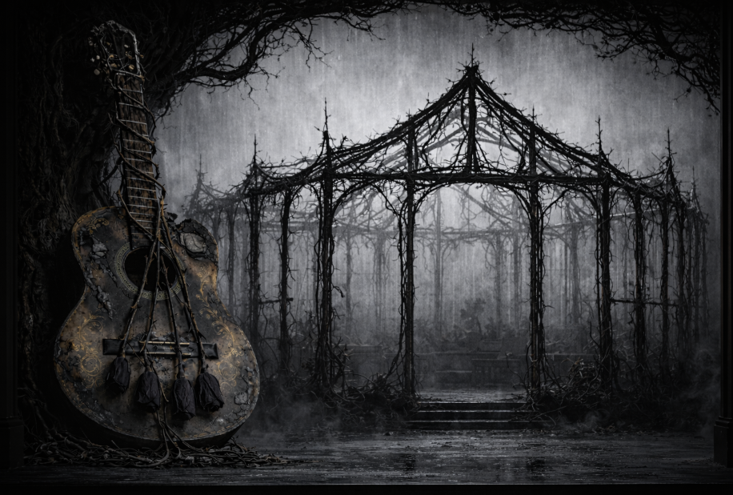
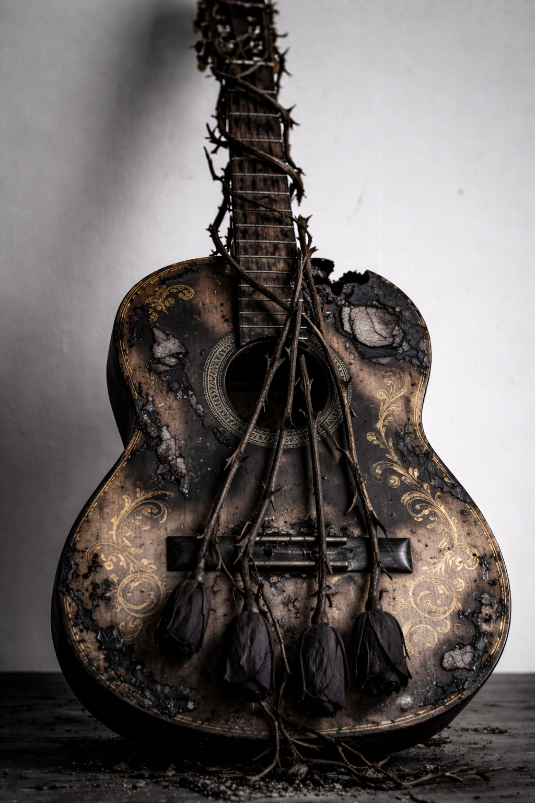
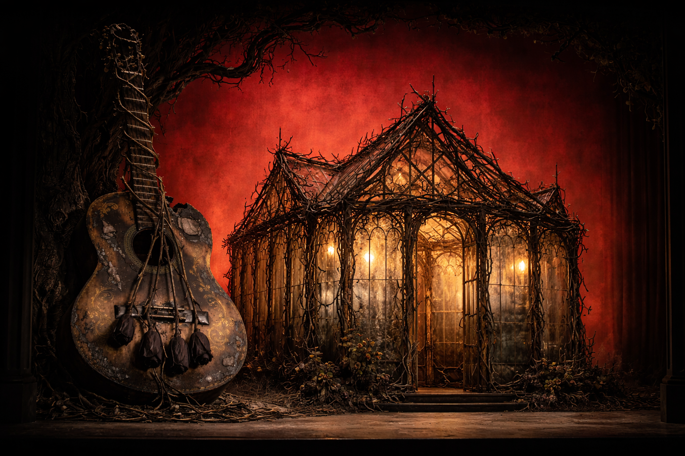
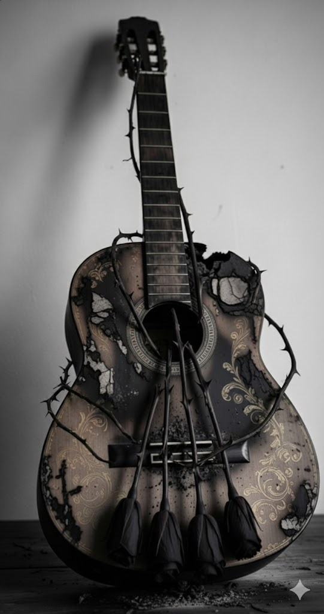
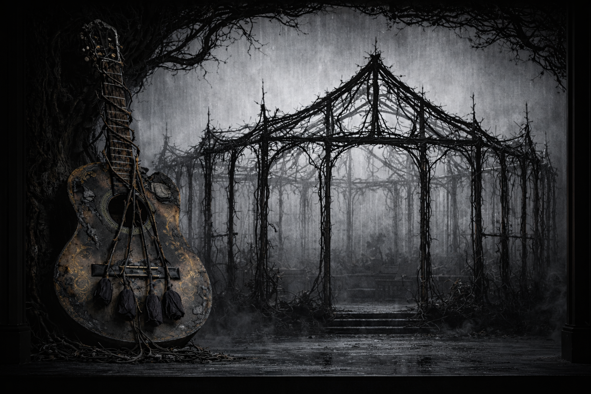
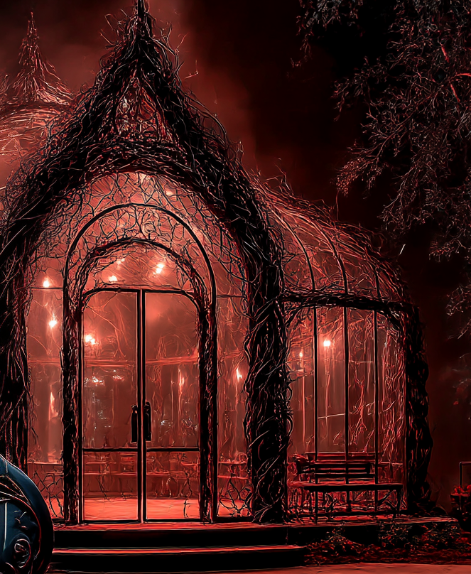
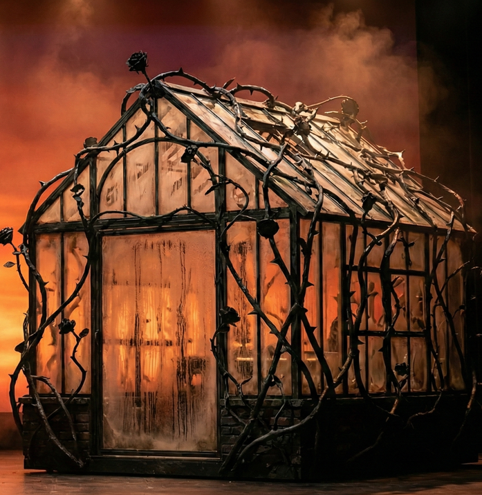
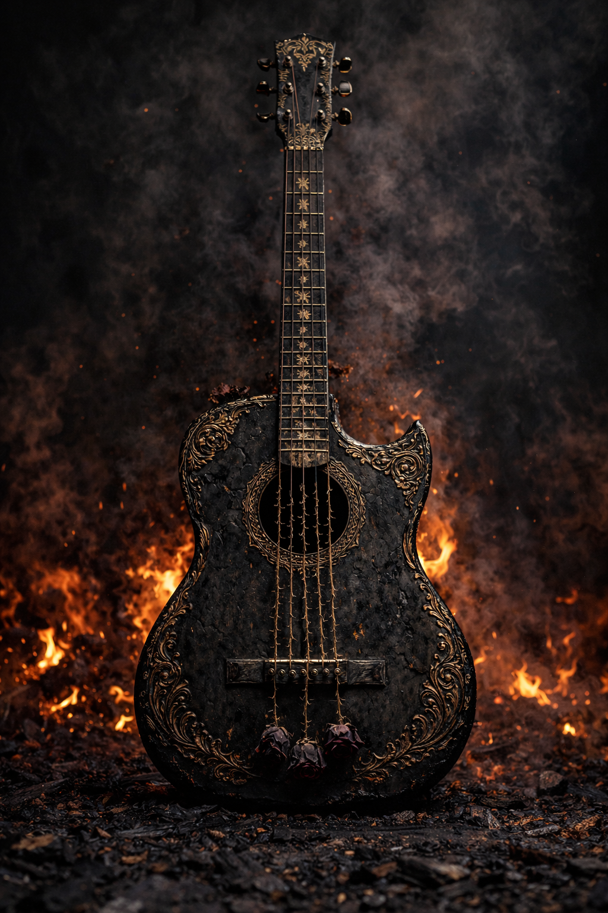
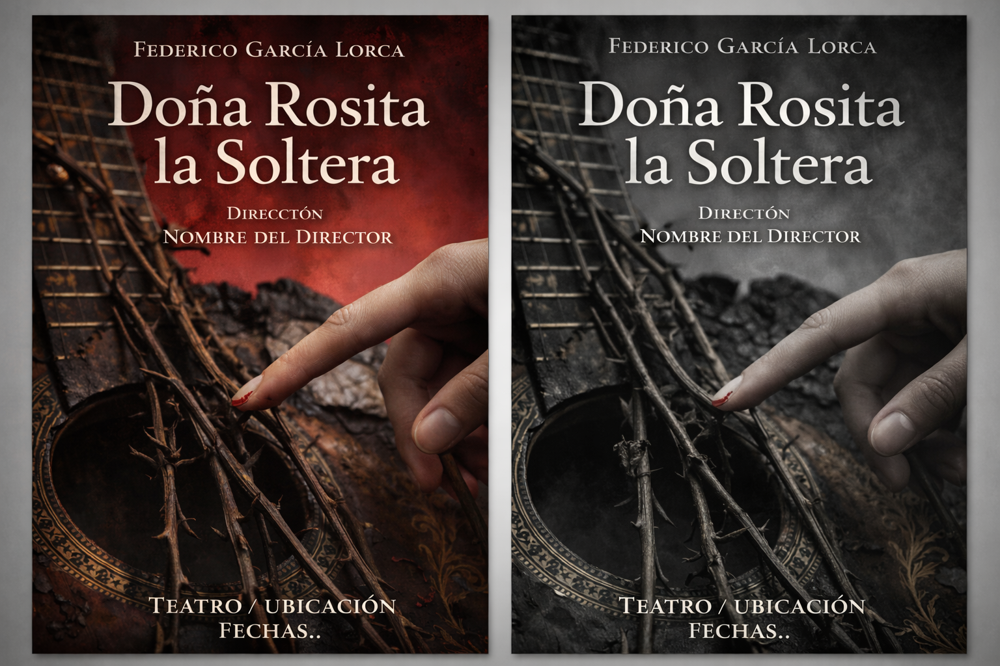
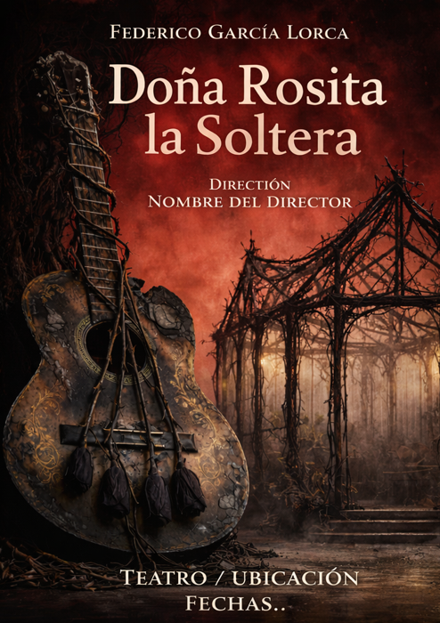

Federico García Lorca, 1935
or The Language of Flowers "” A Granadine poem of the nineteenth century
A cottage built as a greenhouse. Black rose stems form the walls"”twisted, thorned canes creating an architecture that grows more imprisoning with each act. Glass panels fog with condensation that thickens over twenty years. Against a cyclorama that bleeds from arterial red to bone white to silty grey, a woman waits for a man who will never return.
Dominating the stage: a monumental Spanish guitar, charcoal black as if salvaged from fire, its strings made of thorned rose vines. Music that wounds.

The greenhouse as prison. Rosita doesn't tend the conservatory"”she is the flower trapped inside it, cultivated and displayed until she withers on the stem. The architecture of waiting made visible: glass walls fogging with the accumulated breath of unlived years, thorns pressing inward, a space that grows smaller as hope drains away.
A cottage constructed from twisted black rose stem canes forming walls, doorframes, and a peaked roof. Glass panels (or theatrical scrim suggesting glass) fill the spaces between stems, fogged with condensation that thickens across each act.
By Act III, the interior is barely visible through the moisture"”Rosita seen as through tears. The glass is removed entirely for the final scenes, leaving only the skeleton of thorns as the family is evicted, the greenhouse dismantled to its bones.
Stage left, a massive Spanish guitar leans against a gnarled tree trunk"”scaled to perhaps three times human height, charcoal black as if salvaged from fire, with ornate Spanish gold embossed detailing on its body. The strings are thick thorned rose vines, catching light like needles.
No one plays the guitar. No one can.
Lorca's central metaphor made literal in the cyclorama's progression: deep arterial red in Act I (Rosita in bloom, dressed in vivid red), bone white in Act II (the bleaching of hope), and silty grey in Act III (the flower that cannot even fall from its stem).
The colour drains from the world as Rosita drains from herself. By the final scene, even memory has faded to ash.
Act I: Warm amber wash filtering through glass, the red cyclorama glowing. Romantic decay"”the condensation almost beautiful.
Act II: Cooler, flatter light. Practical oil lamps create isolated pockets of warmth within increasing coldness. The white cyclorama exposes rather than flatters.
Act III: Grey, diffused, directionless. Light struggles through thick condensation. Rosita lit from within as if she is the only source of warmth left"”and fading.
The condensation should feel alive"”droplets forming, sliding down glass, pooling. A space that weeps. The thorns should catch light, glinting like needles or teeth. The audience should feel both the seduction of this enclosed garden and its slow violence"”the way beauty can trap you, the way patience becomes paralysis, the way a woman can be cultivated and displayed until she withers on the stem.
The guitar rests as a monument to forces too enormous to escape. A relic pulled from some catastrophe, still bearing scorch marks. Rosita's greenhouse sits dwarfed beneath these charred giants"”her whole life just a footnote to passion and time.
Twenty years. Three acts. The world modernising around her while she embroiders her trousseau and watches the post. The greenhouse grows more imprisoning as hope drains away.
1890
Delicate thorned architecture, glass panels with light condensation. Warm amber light filters through, the deep red cyclorama glowing behind. The greenhouse still breathes.
Rosita enters in vivid red. Her cousin leaves for Tucumán, promising return. She promises to wait. The rosa mutabile blooms crimson at dawn.
1900
The rose stems have multiplied"”more thorned canes crossing and interweaving. Glass panels heavily fogged with thick condensation, droplets streaming down. The bone white cyclorama creates clinical exposure.
Ten years. The letters still arrive. The trousseau grows. The world changes. Rosita does not. The rosa mutabile whitens at midday.
1910
The glass is gone. Only the skeleton of dense black thorns remains, a cage-like structure against silty grey. Condensation pooled on the floor. The space dismantled, exposed, the family being evicted.
He married another. Everyone knew. She waited anyway. Now they address her as "Doña""”the spinster. The rosa mutabile fades at nightfall, too withered to fall.

Two objects dominate the stage, dwarfing the human figures and the greenhouse itself. They are monuments to forces larger than any individual life"”passion and time, desire and decay.
A monumental Spanish guitar, three times human height, leaning against a gnarled dead tree. Charcoal black as if salvaged from a fire, its surface showing the scorched patina of something that has already burned. Ornate Spanish gold embossing"”floral scrollwork, traditional patterns"”survives on the body like memory persisting through destruction.
The strings are thick thorned rose vines, stretched taut, catching light like needles. To play this instrument is to bleed. The music of Andalusian passion becomes an act of self-harm. No one touches it. It stands as warning, as accusation, as the culture that wounds women by demanding they wait, they hope, they perform devotion until their hands are shredded.
These objects are not props"”they are architecture. They dwarf the greenhouse, dwarf Rosita, dwarf the domestic drama playing out beneath them. The scale says: your waiting is not unique. Your passion is not special. These forces crush everyone. You are one more woman wasting her life to the tune of a guitar no one can play.
Stage renders and scenic elements for a greenhouse that exists only in memory and image generation.








Lorca said the theme of the play is the passage of time. Not dramatic events"”nothing much happens. A man leaves, a woman waits, years pass, he marries someone else, she keeps waiting. The horror is in the accumulation, the slow burial of a life under the weight of its own patience.
The greenhouse design makes time visible. The thorns multiply between acts like rings in a tree, recording each year of waiting. The condensation thickens"”tears, breath, the humidity of unlived desire fogging the glass until Rosita can barely see out, until we can barely see in.
"When a little girl has to count the days she begins when she's already old."
"” The Nurse, Act IThe key moment: someone addresses Rosita as "Doña Rosita." That honorific marks her transformation"”no longer a young woman with prospects, now a spinster defined by her solitude. The diminutive "Rosita" with the formal "Doña" creates a contradiction: little rose, formally unmarried. A woman frozen between youth and age, between hope and resignation.
Lorca called this play an examination of "the grotesque treatment of women" in Spain. The greenhouse is that treatment made architectural"”a space designed to cultivate, display, and ultimately suffocate. Rosita is raised like a hothouse flower, protected from the world, trained to bloom for a specific viewer who never arrives.
In Lorca's text, the uncle obsesses over rare flowers in his greenhouse"”particularly the rosa mutabile, which changes colour through the day and dies by nightfall. The design inverts this: Rosita doesn't tend the greenhouse, she IS the greenhouse. The cottage-as-conservatory makes her the cultivated specimen, the rare flower no one comes to see.
Lorca premiered this in Barcelona, December 1935. Eight months later, he was murdered by Nationalist forces in Granada. This was the last play he saw staged. A work about women suffocated by provincial Spanish society, by a man who would be killed by the same forces. The charcoal-black, fire-salvaged quality of the guitar carries that weight: something has already burned, something is already ash, and the play is the slow cooling of embers.
Materials and staging notes for the production team.
Poster Concepts
Four variants tracking the play's central metaphor: the rosa mutabile that blooms red at dawn and withers grey by nightfall. Each poster exists in two states"”the blood-warm palette of Act I and the drained monochrome of Act III.
The first pair frames the thorned architecture against the shifting cyclorama. In the warm version, the greenhouse still suggests sanctuary"”amber light filtering through glass, the structure delicate despite its thorns. In the grey version, the same silhouette becomes skeletal, cage-like, the thorns no longer decorative but predatory. Same structure, different reading. Twenty years will do that.
The second pair offers the production's central image: a woman's hand reaching toward the thorned rose-vine strings of the guitar. The fingernail painted red"”the last trace of vitality, of vanity, of hope. In the warm version, the gesture reads as desire, the hand about to make music despite the cost. In the grey version, the same gesture becomes aftermath: the hand that reached, the strings that cut, the blood already dried to rust.
She will play this instrument. She will bleed. The poster doesn't tell you if it was worth it.
Spanish title, traditional serif letterforms, the formal "Doña" that marks Rosita's transformation from hopeful girl to confirmed spinster. The placeholder credits"”"Dirección / Nombre del Director""”wait to be filled, like the trousseau Rosita embroiders for a wedding that never comes.